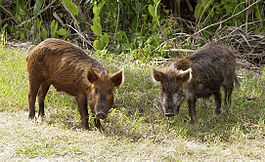

|
Главная Хоббит Задачник Артикль |
Сви́ньи (лат. Suidae) — семейство нежвачных парнокопытных (Artiodactyla), включающее 8 видов, в том числе единственного европейского  представителя семейства — дикого кабана, который является прародителем домашней свиньи. Детёныш свиньи называется поросёнком. |